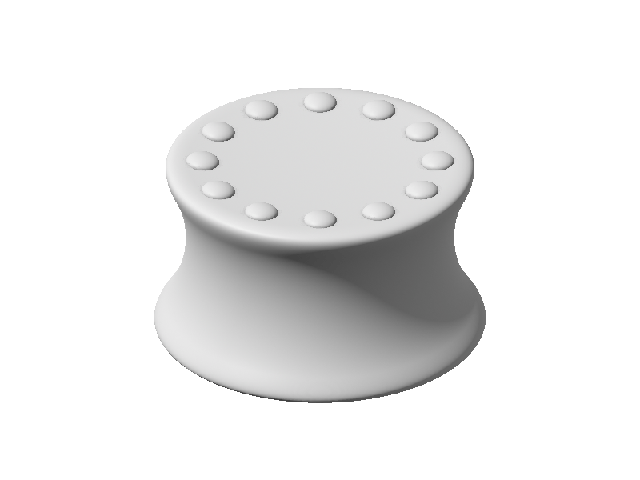
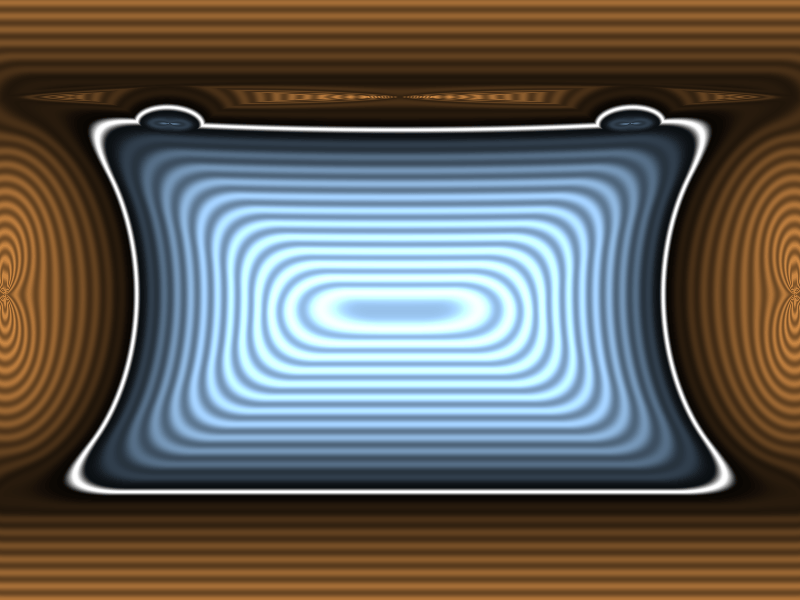

knob
Drafted with AI, not yet reviewed
Knob: a round handle with a dished top, a waist for the fingers and a ring of bumps for grip.
Ported from src/interactive/knob.scad, the handle only: the
printed bearing it sits on, the screw and the insert are left out.
Compared with the original: within 0.62 mm, at the waist’s cusp.


Files
Source
// SPDX-License-Identifier: 0BSD // // Knob: a round handle with a dished top, a waist for the fingers and a // ring of bumps for grip. // // Ported from `src/interactive/knob.scad`, the handle only: the // printed bearing it sits on, the screw and the insert are left out. // // Compared with the original: within 0.62 mm, at the waist's cusp. // --- Parameters --- const D = 60.0; // handle diameter const H = 30.0; // handle height const ROUNDING = 2.0; const BUMPS = 12; const BUMP = D / 12; // bump diameter const BUMP_RING = D * 7 / 12; // --- Handle --- // Half of the cross-section, revolved: X becomes the radius, Y the height. // The waist and the dish are ellipses cut from a rectangle; both touch its // outer corners, so the cuts leave cusps there. // // OpenSCAD's offset(r) offset(-r) rounds every convex corner with radius r // and drops whatever is thinner than 2r. On a field the pair cancels out, // but a smooth difference comes close: where two surfaces run close, the // blend eats the sliver between them and rounds the edge it leaves. With // a width of 2r the profile stays within 0.6 mm of OpenSCAD's, at the // cusps. // // The dish takes everything above it, and the rectangle reaches past it: a // top face just above the shallow dish would otherwise blend with it all // the way across and lower it. let waist = ellipse([D / 6, H / 2]).move([D / 2, H / 2]); let dish = min(ellipse([D / 2, H / 12]).move([0, H]), H - y); let profile = rect([D, 2.0 * H]).move([0, H]) .smooth_difference([waist, dish], 2.0 * ROUNDING); let handle = profile.revolve(); // Bumps half sunk into the dish, centred on its surface and tilted with it. let bump_z = H - H / 12 * sin(acos(BUMP_RING / D)); let bump_tilt = acosd(BUMP_RING / D / 12) + 90.0; let bump = ellipsoid([BUMP / 2, BUMP / 2, BUMP / 4]) .rotate_y(bump_tilt) .move([BUMP_RING / 2, 0, bump_z]); let bumps = bump.polar_array(BUMPS); draw(union(handle, bumps));